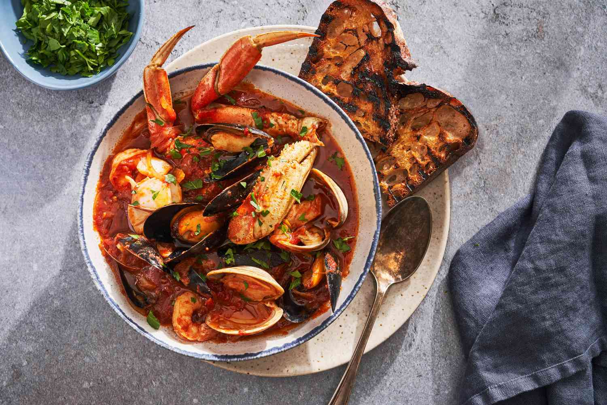
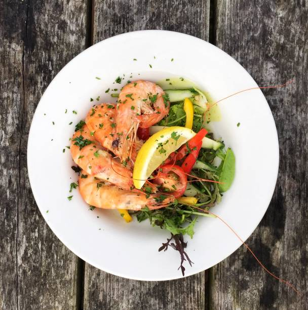

Svježi okusi Jadrana
Dobro došli u Morski Dragulj, restoran u kojem se svježa riba, domaća tjestenina i morski specijaliteti poslužuju u opuštenom mediteranskom ambijentu.
Posebna ponuda
Najtraženija jela
Izdvajamo jela po kojima nas gosti najčešće pamte: svježu ribu, domaću tjesteninu i pažljivo pripremljene morske specijalitete.

Tjestenina s plodovima mora
16,50 €
Domaća tjestenina s kozicama, školjkama i umakom od rajčice.
Detalji
Zašto mi?
Svježe, domaće i pažljivo pripremljeno
Svježa riba
Svakodnevna nabava lokalnih namirnica.
Domaći recepti
Poznati okusi u modernom izdanju.
Ugodan ambijent
Prostor idealan za ručak ili večeru.
Brza usluga
Ljubazno osoblje brine da se svaki gost osjeća dobrodošlo.
Recenzije
Što kažu naši gosti
Hrana je bila odlična, posebno brancin i domaća tjestenina. Ambijent je miran i vrlo ugodan.
Marko Marić
Zadovoljni gost
Večerali smo uz more i uživali u svakom slijedu. Osoblje je bilo profesionalno i vrlo pažljivo.
Marko Kovač
Stalni gost